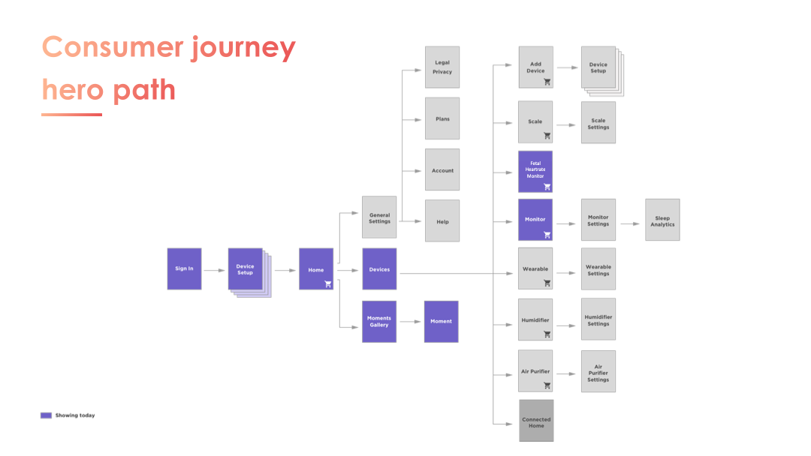
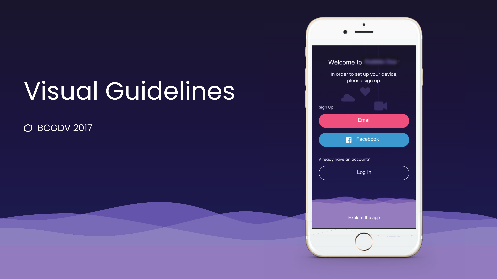
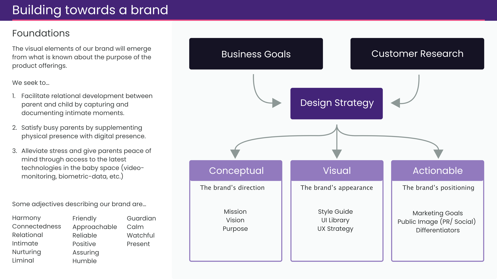
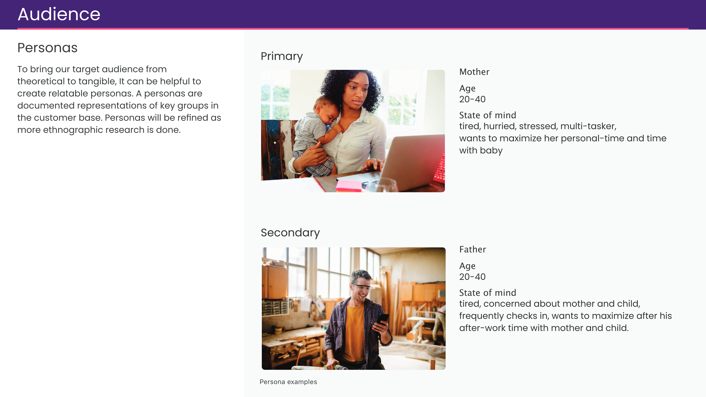
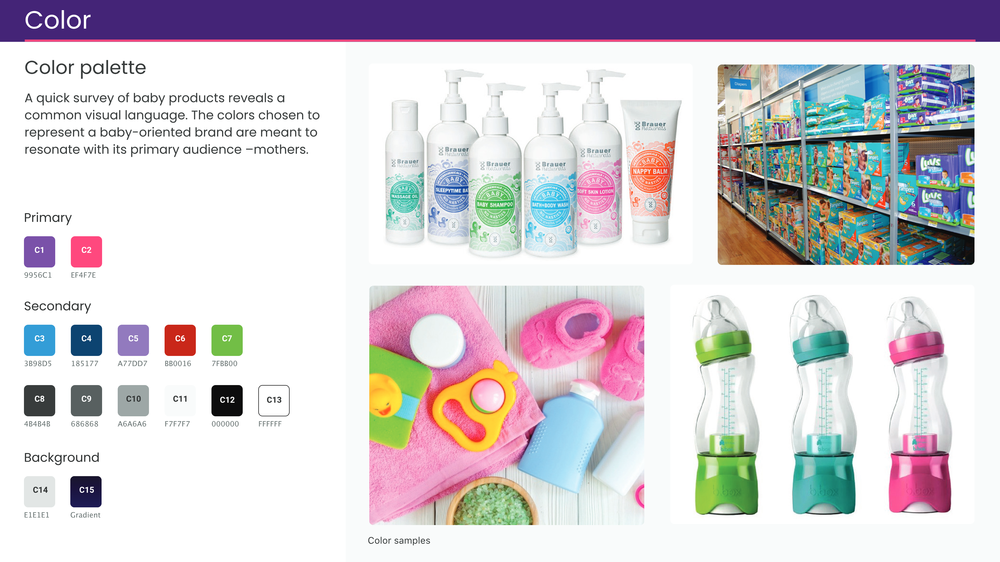
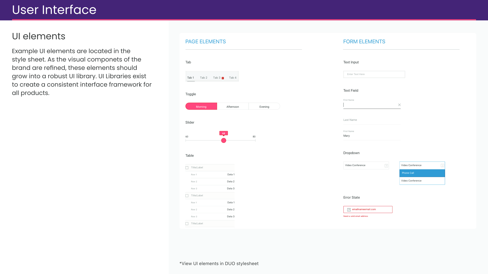
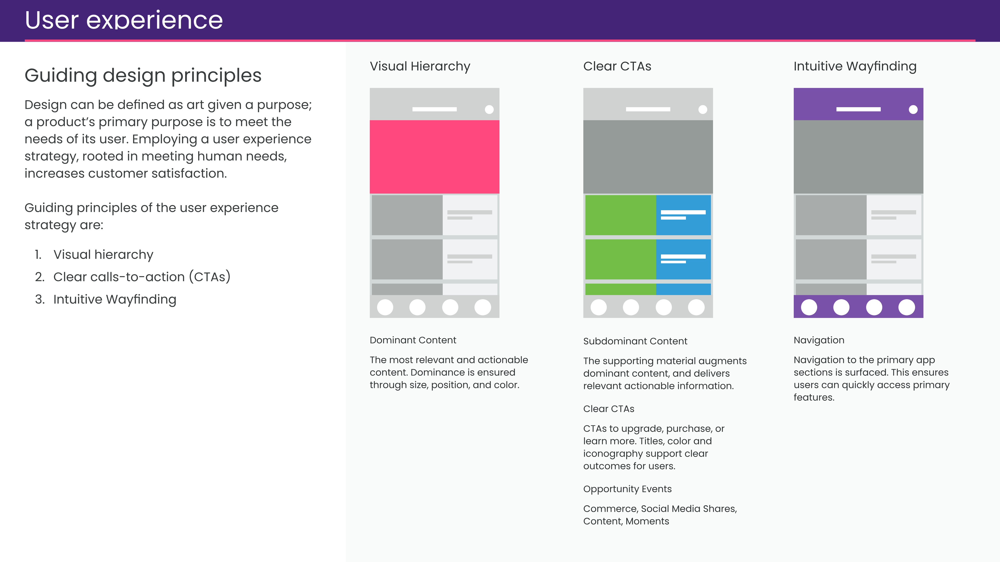
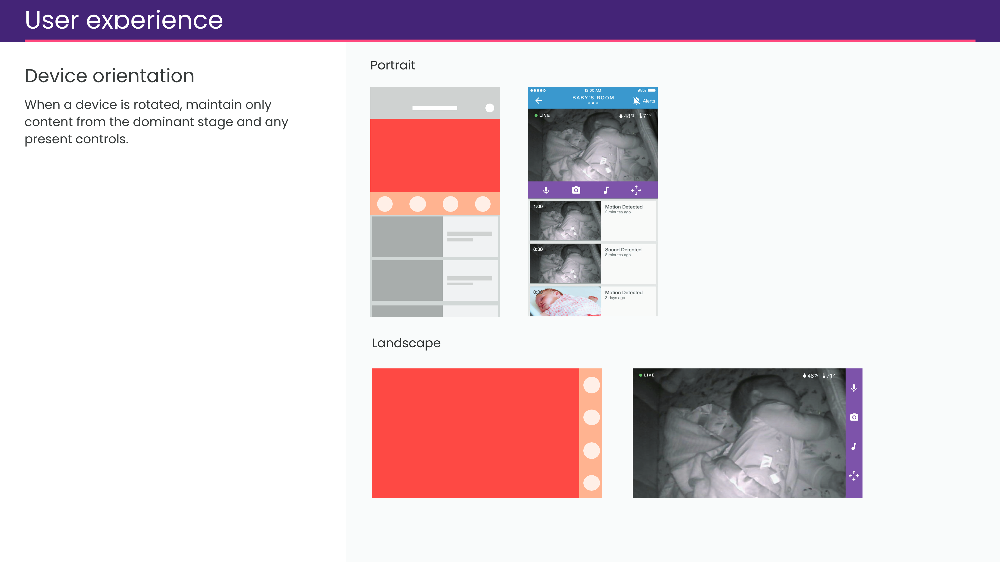
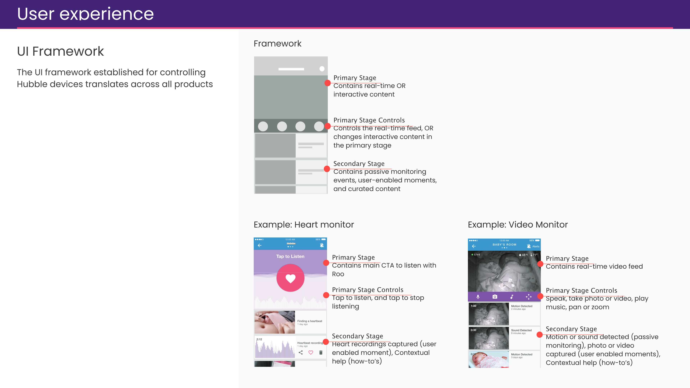

Motorola's baby tech division had built a strong lineup of nursery hardware — monitors, cameras, sound machines — but each device came with its own app. The goal was to unify them into a single smart-nursery platform that could grow with the family, supporting parents from pre-natal through early childhood.
Beyond consolidation, the platform created new revenue opportunities: an activity feed that surfaced device status alongside educational content, advertising, and paid affiliate content — turning the app into a channel, not just a controller. I contributed product strategy, an audit of the existing apps, and visual direction for the new experience.
I worked directly with an ethnographic researcher to map nursery devices to stages of the parents' journey into parenthood. I provided best-in-class examples for key moments in the experience to create a shared product vision with our client.









